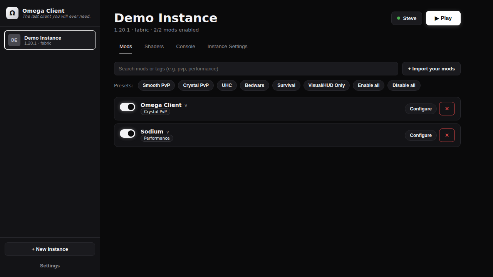
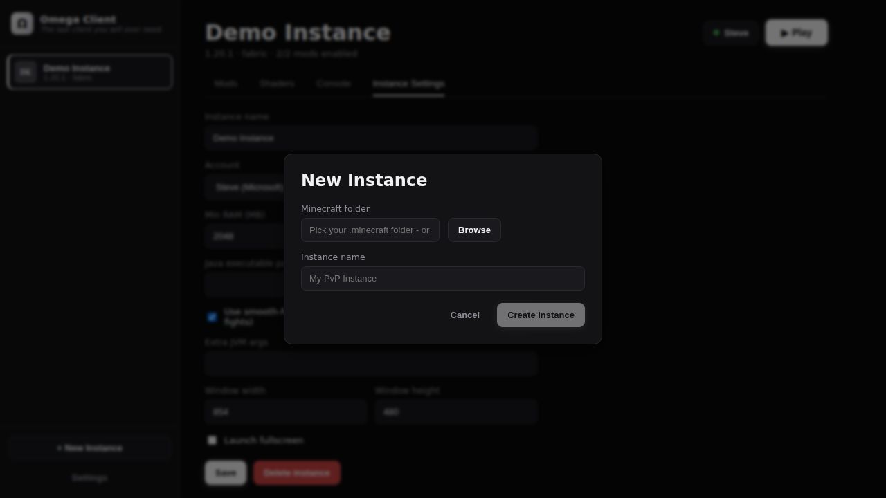
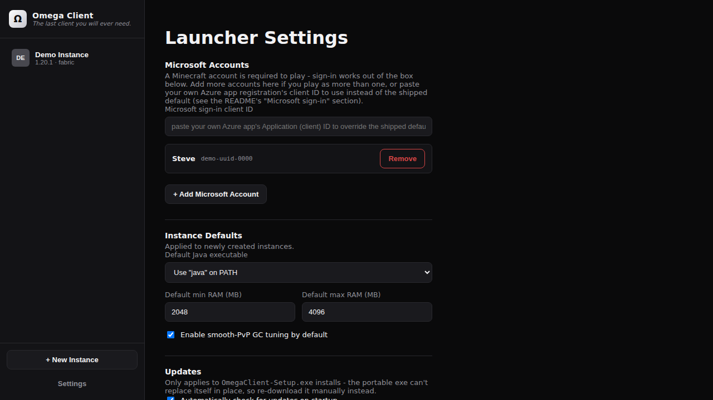

A lightweight Minecraft launcher built for smooth PvP performance — one-click mod toggles, game-mode presets, shaders out of the box, and built-in features you control entirely in-game.

mods/ folder surgery.minecraft you already havePoint Omega at an existing Minecraft install — or an empty folder — and it takes care of the rest: real installs straight from Mojang, mods as toggles, and PvP-tuned launches.
Import your own .jars once and flip them per-instance. Omega reads each jar's real metadata to show proper names, versions and descriptions — and auto-tags everything so presets can bulk-switch your setup for the game mode you're queueing.
mod.jar to mod.jar.disabled; nothing ever leaves your folderThe New Instance dialog downloads any Minecraft release straight from Mojang's own CDNs, with one-click Fabric or Forge on top. Every file is sha1-verified, downloads resume, and each launch is preceded by a genuine install-completeness check.
.minecraft layout
A compatible shader loader — Iris + Sodium on Fabric, Oculus on Forge — is preinstalled automatically, so imported shader packs just work. Microsoft sign-in works out of the box with tokens encrypted at rest and refreshed before every launch.
.zip packs and pick the active one in-game
Every instance gets the Omega companion mod (Fabric and Forge builds) preinstalled automatically. Press Right Shift — or hit the Ω button in the pause menu — and every feature is right there.
Fair play, by design. Every built-in feature is a visual or convenience setting. There is deliberately no reach, no aim assist, no auto-clicker, no velocity changes, and no X-ray — nothing that reads information you couldn't already see or presses a button for you. Read the full policy.
Presets bulk-switch your imported mods by tag, so swapping from crystal practice to a Bedwars queue takes exactly one click.
Installs come straight from Mojang's and the loaders' own servers. Sign-in talks directly to Microsoft, Xbox and Mojang — nowhere else. Nothing is re-hosted.
The entire launcher and companion mod are public on GitHub. Read the code, build it yourself, or fork it — no black boxes.
PvP-tuned G1GC flags, granular particle control, and mod presets that strip your setup down to exactly what the fight needs.
Works on top of any standard install — official launcher, MultiMC, Prism, or a fresh folder. Disabling a mod is a rename, never a delete.
Every launch is preceded by a real install-completeness check. A missing library says "re-run Install to repair it" — not a cryptic crash log.
Optional paid badge cosmetics fund development. Nothing needed to launch, mod, or play is ever gated behind them.
Download Omega Client, point it at your .minecraft, and press Play.